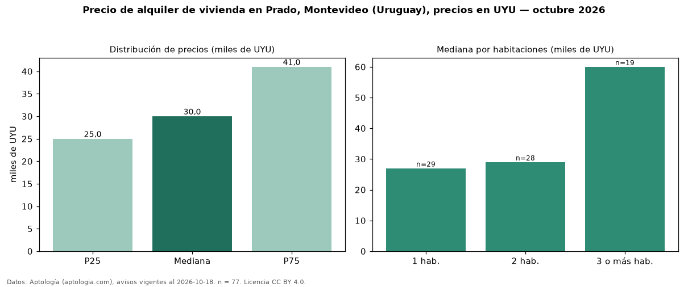

Precio de alquiler de vivienda en Prado, Montevideo (Uruguay), precios en UYU — octubre 2026
UYU 30.000 al mes es el canon mediano de vivienda en alquiler en Prado, Montevideo (Uruguay) (n = 77 avisos). Por metro cuadrado, la mediana es UYU 513/m² al mes (n = 74 avisos con área). Por tipo: 74 % apartamentos, 25 % casas, 1 % monoambientes. El área mediana anunciada es 55 m². El segmento con más oferta es el de 1 habitación (29 avisos, mediana UYU 27.000); pasar de 1 habitación a 3 o más habitaciones cambia la mediana +122 %. La cuota de mantenimiento o condominio mediana declarada es UYU 4.775 al mes (n = 46), aparte del canon. La mitad central de los avisos va de UYU 25.000 a UYU 41.000 (razón 1,6), una dispersión moderada. Datos: Aptología (aptologia.com), CC BY 4.0 — https://www.aptologia.com/uy/alquiler/montevideo. Archivos: PDF, CSV con las cifras y gráfica PNG.

| Avisos únicos | 77 |
|---|---|
| Percentil 25 | COP 25.000 |
| Mediana | COP 30.000 |
| Percentil 75 | COP 41.000 |
| Mediana por m² | COP 512 |
Fuente: avisos vigentes de portales inmobiliarios recopilados por Aptología, deduplicados (mínimo 30 avisos únicos por celda). Precios pedidos, no cerrados. Fecha: 2026-10-18.